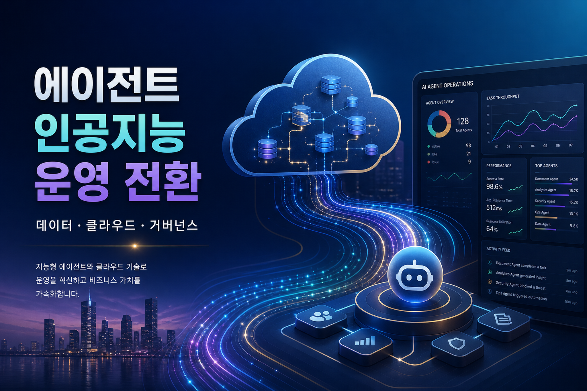
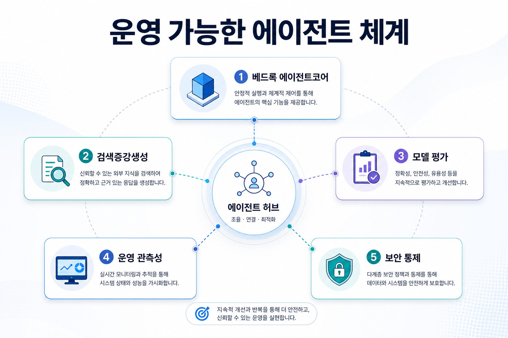
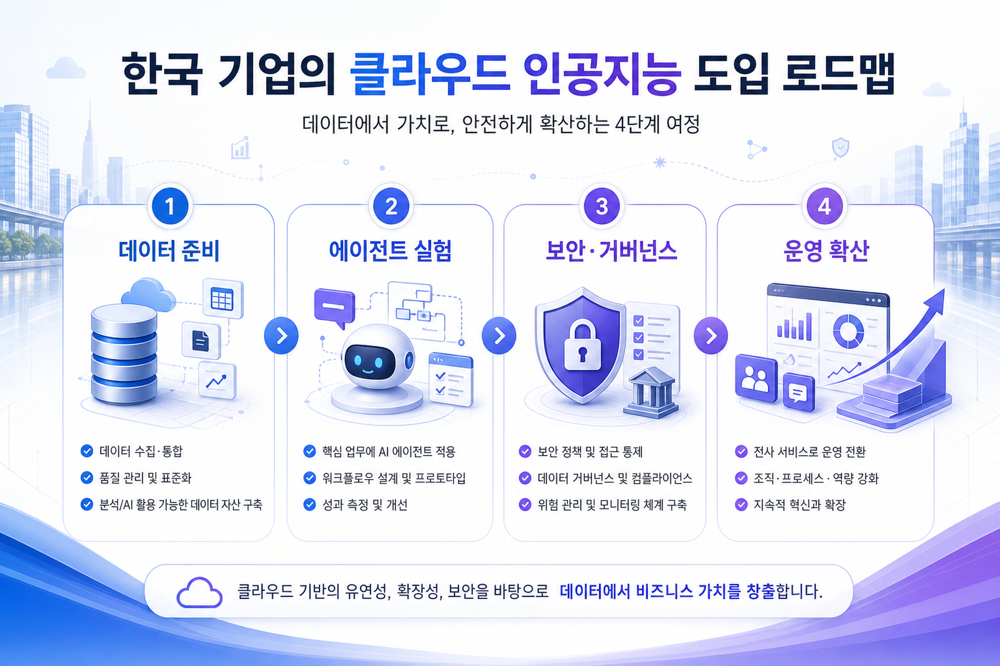

삼십 일
핵심 업무 한 가지를 고르고 데이터 접근·평가 기준·승인 흐름을 함께 정의합니다.
아마존웹서비스 블로그 신호를 기업 인공지능·데이터·클라우드 전략 관점으로 재해석한 일일 전략형 기술 블로그입니다.

최근 수집 문서의 중심축은 단순 모델 호출보다 운영 가능한 에이전트 체계입니다. 검색·벡터 저장소, 모델 평가, 데이터셋 관리, 관측성, 외부 접근 통제가 함께 등장하면서 기업 인공지능의 경쟁력은 무엇을 만들었는가에서 어떻게 반복 검증하고 안전하게 확장하는가로 이동하고 있습니다.

기업은 모델 자체보다 주변 운영 계층을 더 빨리 표준화해야 합니다. 데이터 검색, 에이전트 평가, 권한·비용·로그 통제, 업무 포털 통합이 분리된 과제가 아니라 하나의 운영 아키텍처로 묶이고 있습니다.
한국 대기업과 금융·제조·통신사는 이미 강한 보안·감사·내부망 제약을 갖고 있습니다. 따라서 에이전트 인공지능 도입은 빠른 체험보다 운영 설계가 성패를 가릅니다. 특히 개인정보, 사내 문서 권한, 비용 귀속, 모델 변경 승인, 장애 대응 책임 소재를 초기 제안서 단계에서 분리해 정의해야 합니다.

핵심 업무 한 가지를 고르고 데이터 접근·평가 기준·승인 흐름을 함께 정의합니다.
검색 계층, 테스트셋, 관측 대시보드, 비용 태그를 묶어 반복 가능한 운영 단위로 만듭니다.
현업 포털과 감사 로그를 연결하고, 성공 기준을 업무 처리 시간·오류율·재작업 감소로 측정합니다.
| 영역 | 주요 리스크 | 권장 통제 |
|---|---|---|
| 데이터 | 권한 밖 문서 검색, 최신성 부족 | 문서 권한 상속, 색인 주기, 출처 표시 |
| 모델 | 환각, 회귀 품질 저하 | 업무별 테스트셋, 기준 답변, 변경 승인 |
| 도구 호출 | 오작동, 과도한 권한 | 최소 권한, 승인 단계, 실행 로그 |
| 비용 | 토큰·검색·저장소 비용 폭증 | 태그, 예산 알림, 사용량 대시보드 |
수집 문서 · 1
공개 블로그 기반 수집 자료를 기업 적용성, 운영 통제, 데이터 계층 관점의 근거로 재해석했습니다.
검토 축: 인공지능 운영 · 데이터 계층 · 클라우드 거버넌스
수집 문서 · 2
공개 블로그 기반 수집 자료를 기업 적용성, 운영 통제, 데이터 계층 관점의 근거로 재해석했습니다.
검토 축: 인공지능 운영 · 데이터 계층 · 클라우드 거버넌스
수집 문서 · 3
공개 블로그 기반 수집 자료를 기업 적용성, 운영 통제, 데이터 계층 관점의 근거로 재해석했습니다.
검토 축: 인공지능 운영 · 데이터 계층 · 클라우드 거버넌스
수집 문서 · 4
공개 블로그 기반 수집 자료를 기업 적용성, 운영 통제, 데이터 계층 관점의 근거로 재해석했습니다.
검토 축: 인공지능 운영 · 데이터 계층 · 클라우드 거버넌스
수집 문서 · 5
공개 블로그 기반 수집 자료를 기업 적용성, 운영 통제, 데이터 계층 관점의 근거로 재해석했습니다.
검토 축: 인공지능 운영 · 데이터 계층 · 클라우드 거버넌스
수집 문서 · 6
공개 블로그 기반 수집 자료를 기업 적용성, 운영 통제, 데이터 계층 관점의 근거로 재해석했습니다.
검토 축: 인공지능 운영 · 데이터 계층 · 클라우드 거버넌스
수집 문서 · 7
공개 블로그 기반 수집 자료를 기업 적용성, 운영 통제, 데이터 계층 관점의 근거로 재해석했습니다.
검토 축: 인공지능 운영 · 데이터 계층 · 클라우드 거버넌스
수집 문서 · 8
공개 블로그 기반 수집 자료를 기업 적용성, 운영 통제, 데이터 계층 관점의 근거로 재해석했습니다.
검토 축: 인공지능 운영 · 데이터 계층 · 클라우드 거버넌스
수집 문서 · 9
공개 블로그 기반 수집 자료를 기업 적용성, 운영 통제, 데이터 계층 관점의 근거로 재해석했습니다.
검토 축: 인공지능 운영 · 데이터 계층 · 클라우드 거버넌스
수집 문서 · 10
공개 블로그 기반 수집 자료를 기업 적용성, 운영 통제, 데이터 계층 관점의 근거로 재해석했습니다.
검토 축: 인공지능 운영 · 데이터 계층 · 클라우드 거버넌스
수집 문서 · 11
공개 블로그 기반 수집 자료를 기업 적용성, 운영 통제, 데이터 계층 관점의 근거로 재해석했습니다.
검토 축: 인공지능 운영 · 데이터 계층 · 클라우드 거버넌스
수집 문서 · 12
공개 블로그 기반 수집 자료를 기업 적용성, 운영 통제, 데이터 계층 관점의 근거로 재해석했습니다.
검토 축: 인공지능 운영 · 데이터 계층 · 클라우드 거버넌스
| 번호 | 출처 | 문서 주제 | 확인 방법 |
|---|---|---|---|
| 1 | 아마존웹서비스 블로그 | 자금세탁방지 경보 분류 자동화 | 로컬 수집 문서의 원문 링크 기준으로 확인 |
| 2 | 아마존웹서비스 블로그 | 클로드 최신 모델 활용 | 로컬 수집 문서의 원문 링크 기준으로 확인 |
| 3 | 아마존웹서비스 블로그 | 에이전트 테스트셋 관리 | 로컬 수집 문서의 원문 링크 기준으로 확인 |
| 4 | 아마존웹서비스 블로그 | 심층 에이전트 평가 | 로컬 수집 문서의 원문 링크 기준으로 확인 |
| 5 | 아마존웹서비스 블로그 | 실험 관리 접근 통제 | 로컬 수집 문서의 원문 링크 기준으로 확인 |
| 6 | 아마존웹서비스 블로그 | 기계학습 포털 내장 | 로컬 수집 문서의 원문 링크 기준으로 확인 |
| 7 | 아마존웹서비스 블로그 | 특화 언어 모델 학습 | 로컬 수집 문서의 원문 링크 기준으로 확인 |
| 8 | 아마존웹서비스 블로그 | 에이전트 검색 기반 | 로컬 수집 문서의 원문 링크 기준으로 확인 |
| 9 | 아마존웹서비스 블로그 | 복원력 운영 자동화 | 로컬 수집 문서의 원문 링크 기준으로 확인 |
| 10 | 아마존웹서비스 블로그 | 분산 학습 네트워크 | 로컬 수집 문서의 원문 링크 기준으로 확인 |
| 11 | 아마존웹서비스 블로그 | 영업 전략 에이전트 | 로컬 수집 문서의 원문 링크 기준으로 확인 |
| 12 | 아마존웹서비스 블로그 | 사업 관리 대화형 비서 | 로컬 수집 문서의 원문 링크 기준으로 확인 |
이미지 프롬프트 전문은 같은 날짜 폴더의 별도 기록 파일에 보존했습니다.